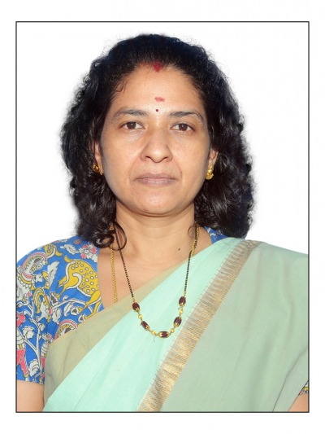

Prof. Suja S Nair
MBA , PhD.
Professor
Vice-chairman,AP chapter ,AIMS
Dept of. Business Management
Prof. Suja S Nair is professor in the department of Business management of Vikrama Simhapuri University college, Nellore. She is also Member ,Executive council of the university.Present the Dean,commerce and management and Dean ,Research &Development. She has an experience of about 22 years of teaching in the area of Human Resource Management . A recipient of Savitibhai Phule award as women achiever and Best teacher award at university level.Her areas of research interest are Business Ethics, Corporate Social Responsibility and Change Management. She has organized many national and international Seminars, Workshops, and Management Meets and participated in various National and International Conferences and workshops. She has also delivered lectures and was key note speaker in some of the above. She has published about 53 research papers in Journals and other publications.
She has edited three books. Her services were utilised in many committees.
ClicK Hear To View Profice